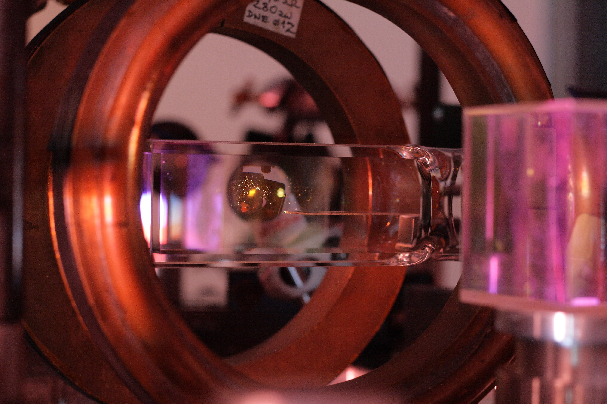

Company / Founders & People
The people turning possibility into progress. Different expertise. A shared direction. Meet the founders and team shaping OAQ’s future.
Profile layout preview · Founder names are included. Photographs, detailed titles, biographies, and LinkedIn links will be added after confirmation. Team member information is provisional.

Planned portrait · Front-facing or three-quarter view
FOUNDER / OAQ Actual portrait to be added
Founder
Deok young Lee in LinkedIn ↗ Co-founder · Detailed title to be confirmed
This space will introduce expertise, key experience, and the story behind founding OAQ. A verified biography will be added later.
LinkedIn URL to be added
Planned portrait · Front-facing or three-quarter view
FOUNDER / OAQ Actual portrait to be added
Founder
Minseok Choi in LinkedIn ↗ Co-founder · Detailed title to be confirmed
This space will introduce expertise, key experience, and the story behind founding OAQ. A verified biography will be added later.
LinkedIn URL to be added
Our Team
Building what comes next, together. Connecting individual expertise around one shared vision.
Planned portrait · Front-facing or three-quarter view
OAQ / PEOPLE Team member 01 portrait to be added
TEAM / 01
Team member name Title · Area of responsibility
A space to introduce this person’s role, expertise, and key experience.
in LinkedIn profile ↗ Profile URL to be added
Planned portrait · Front-facing or three-quarter view
OAQ / PEOPLE Team member 02 portrait to be added
TEAM / 02
Team member name Title · Area of responsibility
A space to introduce this person’s role, expertise, and key experience.
in LinkedIn profile ↗ Profile URL to be added
Planned portrait · Front-facing or three-quarter view
OAQ / PEOPLE Team member 03 portrait to be added
TEAM / 03
Team member name Title · Area of responsibility
A space to introduce this person’s role, expertise, and key experience.
in LinkedIn profile ↗ Profile URL to be added